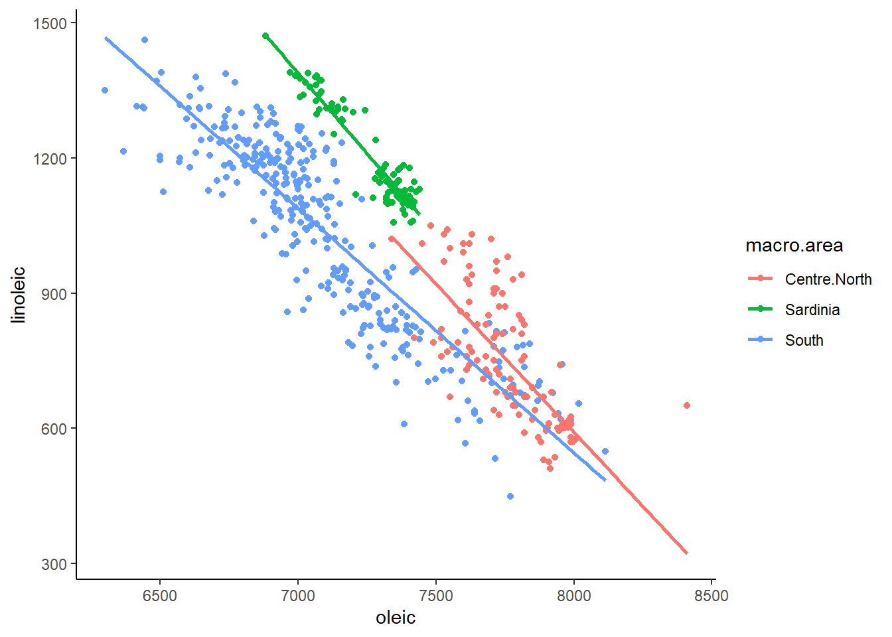

11 Correlation
intro lines about what correlation is etc...
11.1 Pearson Correlation
Pearson's correlation is measured by r and ranges between -1 and +1. +1 indicates that the variables X and Y are maximally positively correlated, such that as values of X increase so do values of Y. -1 indicates a compleltely negative correlation such that as values of X increase, values of Y decrease. A value of 0 indicates that there is no overall relationship.
insert figure of negative 0.6, 0 and positive 0.6 here
The below image shows scatterplots, each with a sample size of 30. The trendline is to help demonstrate how correlations of different magnitudes look in terms of their association.

Correlations
11.2 Calculating the Pearson Correlation in R
To calculate the correlation coefficient in R, it's pretty straightforward. You simply can use the cor() function. For instance, let's correlate...
cor(1:10,1:10) # replace with an example## [1] 1Before we go further into what we should do with these correlations, and how to signficance test them, let's learn a little bit more about how they come about.
11.3 Cross-products
The formula for calculating the Pearson's correlation coefficient for a sample is:
\(r = \frac{\sum_{}^{} z_{x}z_{y}}{n - 1}\)
When we have a population, we can use the formula:
\(r = \frac{\sum_{}^{} z_{x}z_{y}}{N}\)
Essentially, the steps are to convert all the X and Y scores into their respective z-scores. Then you mutliply these two values together to get the cross-product. After summing up all the cross-products for each data point, we divide this number by n-1 if we're dealing with a sample (we usually are), or N if we're dealing with a population.
The sum of the cross-products will therefore be largely positive if positive z-scores are multiple together or if negative z-scores are multiplied together. The sum of the cross-products will be largely negative if negative z-scores are multipled with positive z-scores.
The following example should help make this clearer. Look at the following data, its scatterplot and the correlation coefficient. They show that we have a positive correlation of r=0.84. Let's break it down how we got that value.
x <- c(1.1, 1.5, 2.1, 3.5, 3.6, 3.5, 2.6, 5.6, 4.4, 3.9)
y <- c(2.8, 2.9, 1.6, 5.5, 4.7, 8.1, 3.3, 7.7, 7.1, 5.8)
df <- data.frame(x, y)
df## x y
## 1 1.1 2.8
## 2 1.5 2.9
## 3 2.1 1.6
## 4 3.5 5.5
## 5 3.6 4.7
## 6 3.5 8.1
## 7 2.6 3.3
## 8 5.6 7.7
## 9 4.4 7.1
## 10 3.9 5.8ggplot(df, aes(x = x, y = y)) + geom_point(size=2)cor(x,y)## [1] 0.8418262First, let's calculate the means and standard deviation (using sd so a sample standard deviation) of x and y. We need to get these values so we can calculate the z-scores of each.
# step 1: Get the mean and sd of x and y
mean(x)## [1] 3.18sd(x)## [1] 1.370158mean(y)## [1] 4.95sd(y)## [1] 2.259916Now, we can calculate the z-scores, remembering that the formula for that is:
\(z = \frac{x - \overline{x}}{s_{x}}\)
# step 2. Calculate z-scores of x, and z-scores of y.
df$zx <- (x - mean(x)) / sd(x) # z scores of x
df$zy <- (y - mean(y)) / sd(y) # z scores of y
df## x y zx zy
## 1 1.1 2.8 -1.5180729 -0.9513626
## 2 1.5 2.9 -1.2261358 -0.9071132
## 3 2.1 1.6 -0.7882302 -1.4823557
## 4 3.5 5.5 0.2335497 0.2433718
## 5 3.6 4.7 0.3065340 -0.1106236
## 6 3.5 8.1 0.2335497 1.3938569
## 7 2.6 3.3 -0.4233088 -0.7301155
## 8 5.6 7.7 1.7662195 1.2168592
## 9 4.4 7.1 0.8904082 0.9513626
## 10 3.9 5.8 0.5254868 0.3761201Following this, we simply multiple the z-scores of x and y against each other for every data point:
# step 3. Calculate the cross-product: zx * zy
df$zxzy <- df$zx * df$zy
df## x y zx zy zxzy
## 1 1.1 2.8 -1.5180729 -0.9513626 1.44423785
## 2 1.5 2.9 -1.2261358 -0.9071132 1.11224399
## 3 2.1 1.6 -0.7882302 -1.4823557 1.16843751
## 4 3.5 5.5 0.2335497 0.2433718 0.05683941
## 5 3.6 4.7 0.3065340 -0.1106236 -0.03390988
## 6 3.5 8.1 0.2335497 1.3938569 0.32553483
## 7 2.6 3.3 -0.4233088 -0.7301155 0.30906432
## 8 5.6 7.7 1.7662195 1.2168592 2.14924036
## 9 4.4 7.1 0.8904082 0.9513626 0.84710104
## 10 3.9 5.8 0.5254868 0.3761201 0.19764615We now have all of our cross-products. Notice why the majority are positive. This is because we have multiplied positive \(z_{x}\) with positive \(z_{y}\) or we multiplied negative \(z_{x}\) with negative \(z_{y}\). This happens because datapoints that tend to be above the mean for x are also above the mean for y, and points that are below the mean of x are also below the mean of y.
We can add this up to get the sum of the cross-products. That is the \(\sum_{}^{} z_{x}z_{y}\) in the formula.
# step 4. Sum up the cross products.
sum(df$zxzy) # 7.58## [1] 7.576436We now divide that by n-1 as we have a sample, to get the correlation coefficient r. That gives us an estimation of the average cross-product.
# step 5- calculate 'r' by dividing by n-1. (for a sample)
sum(df$zxzy) / 9 # our n was 10, so n-1 = 9## [1] 0.8418262sum(df$zxzy) / (nrow(df) - 1) # nrow(df) is more generalizable## [1] 0.8418262# r=0.84Just as a quick second example, here is a work through calculating a negative correlation. Notice the \(z_{x}\) and \(z_{y}\) scores that are multiplied together. They are largely opposite in terms of signs. This is what leads to a negative sum of cross-products and the negative correlation. Why? Because data points that are above the mean for x are generally below the mean in terms of y and visa-versa.
### Example 2. Negative Correlation.
x <- c(1.1, 1.5, 2.1, 3.5, 3.6, 3.5, 2.6, 5.6, 4.4, 3.9)
y <- c(10.4, 10.0, 8.4, 8.5, 8.4, 6.3, 7.1, 6.2, 8.1, 10.0)
df <- data.frame(x, y)
ggplot(df, aes(x = x, y = y)) + geom_point(size=2)
cor(df$x,df$y) ## [1] -0.6112965Here is the code, truncated for space:
# Calculate z-scores for each x and each y
df$zx <- (x - mean(x)) / sd(x)
df$zy <- (y - mean(y)) / sd(y)
# Calculate the cross-product: zx * zy
df$zxzy <- df$zx * df$zy
# let's look at the dataframe
# notice the cross products:
df## x y zx zy zxzy
## 1 1.1 10.4 -1.5180729 1.37762597 -2.09133671
## 2 1.5 10.0 -1.2261358 1.11012578 -1.36116500
## 3 2.1 8.4 -0.7882302 0.04012503 -0.03162776
## 4 3.5 8.5 0.2335497 0.10700008 0.02498983
## 5 3.6 8.4 0.3065340 0.04012503 0.01229968
## 6 3.5 6.3 0.2335497 -1.36425096 -0.31862038
## 7 2.6 7.1 -0.4233088 -0.82925058 0.35102907
## 8 5.6 6.2 1.7662195 -1.43112601 -2.52768263
## 9 4.4 8.1 0.8904082 -0.16050011 -0.14291061
## 10 3.9 10.0 0.5254868 1.11012578 0.58335643# Sum up the cross products and Calculate 'r' by dividing by N-1.
sum(df$zxzy) / (nrow(df) - 1)## [1] -0.6112965cor(df$x,df$y) ## [1] -0.611296511.4 Conducting a Pearson Correlation Test
Although cor() gives you the correlation between two continuous variables, to actually run a significance test, you need to use cor.test().
Let's use some BlueJay data to do this. We'll just use data on male birds.
library(tidyverse)
jays <- read_csv("data/BlueJays.csv")## Parsed with column specification:
## cols(
## BirdID = col_character(),
## KnownSex = col_character(),
## BillDepth = col_double(),
## BillWidth = col_double(),
## BillLength = col_double(),
## Head = col_double(),
## Mass = col_double(),
## Skull = col_double(),
## Sex = col_integer()
## )jayM <- jays %>% filter(KnownSex == "M") # we'll just look at Males
nrow(jayM) # 63 observations## [1] 63head(jayM)## # A tibble: 6 x 9
## BirdID KnownSex BillDepth BillWidth BillLength Head Mass Skull Sex
## <chr> <chr> <dbl> <dbl> <dbl> <dbl> <dbl> <dbl> <int>
## 1 0000-00000 M 8.26 9.21 25.9 56.6 73.3 30.7 1
## 2 1142-05901 M 8.54 8.76 25.0 56.4 75.1 31.4 1
## 3 1142-05905 M 8.39 8.78 26.1 57.3 70.2 31.2 1
## 4 1142-05909 M 8.71 9.84 25.5 57.3 74.9 31.8 1
## 5 1142-05912 M 8.74 9.28 25.4 57.1 75.1 31.8 1
## 6 1142-05914 M 8.72 9.94 30 60.7 78.1 30.7 1Let's say you're interested in examining whether there is an association between Body Mass and Head Size. First we'll make a scatterplot between the Mass and Head columns. We'll also investigate the correlation using cor().
ggplot(jayM, aes(x=Mass, y=Head)) +
geom_point(shape = 21, colour = "navy", fill = "dodgerblue") +
stat_smooth(method="lm", se=F)
cor(jayM$Mass, jayM$Head) # r = 0.58, a strong positive correlation.## [1] 0.5773562To run the significance test, we do the following:
cor.test(jayM$Head, jayM$Mass) ##
## Pearson's product-moment correlation
##
## data: jayM$Head and jayM$Mass
## t = 5.5228, df = 61, p-value = 7.282e-07
## alternative hypothesis: true correlation is not equal to 0
## 95 percent confidence interval:
## 0.3846090 0.7218601
## sample estimates:
## cor
## 0.5773562This gives us a lot of information. Firstly, at the bottom it repeats the correlation coefficient cor. At the top, it gives us the value of t which is essentially how surprising it is for us to get the correlation we did assuming we were drawing our sample from a population where there is no correlation. Associated with this t value is the degrees of freedom which is equal to n-2, so in this case that is 63-2 = 61. The p-value is also given. If we are using alpha=0.05 as our significance level, then we can reject the hypothesis that there is no overall correlation in the population between Body Mass and Head size if p<0.05.
The default for cor.test() is to do a two-tailed test. This is testing whether your observed correlation r is different from r=0 in either the positive or negative direction. This default version also gives us the confidence interval for the correlation coefficient. Essentially, this gives us the interval in which we have a 95% confidence that the true population r lies (remember we just have data from one sample that theoretically comes from a population).
It's also possible however that you had an a priori prediction about the direction of the effect. For instance, you may have predicted that Body Mass would be positively correlated with Head Size. In this case, you could do a one-tailed correlation test, where your alternative hypothesis is that there is a positive correlation and the null is that the correlation coefficient is equal to 0 or less than 0.
To do one-tailed tests you need to add the alternative argument.
# testing if there is a positive correlation
cor.test(jayM$Head, jayM$Mass, alternative = "greater") ##
## Pearson's product-moment correlation
##
## data: jayM$Head and jayM$Mass
## t = 5.5228, df = 61, p-value = 3.641e-07
## alternative hypothesis: true correlation is greater than 0
## 95 percent confidence interval:
## 0.4187194 1.0000000
## sample estimates:
## cor
## 0.5773562# testing if there is a negative correlation
cor.test(jayM$Head, jayM$Mass, alternative = "less") ##
## Pearson's product-moment correlation
##
## data: jayM$Head and jayM$Mass
## t = 5.5228, df = 61, p-value = 1
## alternative hypothesis: true correlation is less than 0
## 95 percent confidence interval:
## -1.0000000 0.7017994
## sample estimates:
## cor
## 0.577356211.5 Assumptions of Pearson's Correlation
The Pearson Correlation Coefficient requires your data to be approximately normally distributed. To do this we have various options how to test for normality.
Firstly, we could do a Shapiro-Wilk test, which formally determines whether our data are normal. This is done using shapiro.test(), where we assume our data are from a normal population if the resulting p-value is above 0.05. If the p-value is below 0.05 then we have evidence to reject that our data come from a normal population.
With our data above, this would look like this when running the test on each variable:
shapiro.test(jayM$Mass) # P > 0.05, therefore cannot reject null that data is not normal##
## Shapiro-Wilk normality test
##
## data: jayM$Mass
## W = 0.97222, p-value = 0.1647shapiro.test(jayM$Head) # P > 0.05, therefore cannot reject null that data is not normal##
## Shapiro-Wilk normality test
##
## data: jayM$Head
## W = 0.96521, p-value = 0.07189We can also make a QQ-plot for each variable. Essentially what we require from this plot is for the majority of our data to fall on the straight line - especially the datapoints in the middle. Some deviation at the tails is ok. This plot orders our data and plots the observed data against values on the x-axis that we would expect to get if our data was truly from a normal population.
qqnorm(jayM$Mass)
qqline(jayM$Mass, col = "steelblue", lwd = 2)
qqnorm(jayM$Head)
qqline(jayM$Head, col = "steelblue", lwd = 2)
Both of these QQ plots are ok, and indicate normality, as does our Shapiro-Wilk tests. Therefore we would be ok to use a Pearson Correlation test with these data.
What should you do though if either of your continuous variables are not approximately normally distributed? In that case, there are other correlation coefficients and associated significance tests that you could run instead. We describe these in more detail in Section x.xxx
11.6 Confidence Intervals for R
bit more on this and the theory.
11.7 Partial Correlations
why.... the stupid formula.... and how to do in R.... and that there are technically better ways...
11.8 Non-parametric Correlations
examples....
when I can be bothered, edit this code chunk down into words + code
When at least on of our variables are not normal, then we need to consider alternative approaches to the Pearson correlation for assessing correlations.
Let's take this example, where we are interested in seeing if there's an association between saturated fat and cholesterol levels across a bunch of different cheeses:
library(tidyverse)
cheese <- read_csv("data/cheese.csv")## Parsed with column specification:
## cols(
## type = col_character(),
## sat_fat = col_double(),
## polysat_fat = col_double(),
## monosat_fat = col_double(),
## protein = col_double(),
## carb = col_double(),
## chol = col_integer(),
## fiber = col_double(),
## kcal = col_integer()
## )head(cheese)## # A tibble: 6 x 9
## type sat_fat polysat_fat monosat_fat protein carb chol fiber kcal
## <chr> <dbl> <dbl> <dbl> <dbl> <dbl> <int> <dbl> <int>
## 1 blue 18.7 0.8 7.78 21.4 2.34 75 0 353
## 2 brick 18.8 0.784 8.60 23.2 2.79 94 0 371
## 3 brie 17.4 0.826 8.01 20.8 0.45 100 0 334
## 4 camembert 15.3 0.724 7.02 19.8 0.46 72 0 300
## 5 caraway 18.6 0.83 8.28 25.2 3.06 93 0 376
## 6 cheddar 21.1 0.942 9.39 24.9 1.28 105 0 403# let's make a scatterplot of saturated fat against cholesterol
ggplot(cheese, aes(x = sat_fat, y = chol)) + geom_point() +
stat_smooth(method="lm",se=F)
It looks like there is a pretty obvious relationship, but let's check the normality of each variable before progressing. Firstly the Shapiro-Wilk tests suggest that our data do not come from a normal distribution:
shapiro.test(cheese$sat_fat) # P < 0.05, therefore data may not be normal##
## Shapiro-Wilk normality test
##
## data: cheese$sat_fat
## W = 0.85494, p-value = 6.28e-07shapiro.test(cheese$chol) # P < 0.05, therefore data may not be normal##
## Shapiro-Wilk normality test
##
## data: cheese$chol
## W = 0.90099, p-value = 2.985e-05Secondly, we have quite dramatic deviation from the straight line of our datapoints in our QQ plots. This indicates that our dat are likley skewed.
qqnorm(cheese$sat_fat)
qqline(cheese$sat_fat, col = "steelblue", lwd = 2)
qqnorm(cheese$chol)
qqline(cheese$chol, col = "steelblue", lwd = 2)We could be thorough and check this by plotting histograms of our data:
library(gridExtra)##
## Attaching package: 'gridExtra'## The following object is masked from 'package:dplyr':
##
## combinep1 <- ggplot(cheese, aes(x=sat_fat)) + geom_histogram(color="black", fill="lightseagreen")
p2 <- ggplot(cheese, aes(x=chol)) + geom_histogram(color="black", fill="lightseagreen")
grid.arrange(p1,p2,nrow=1)## `stat_bin()` using `bins = 30`. Pick better value with `binwidth`.## `stat_bin()` using `bins = 30`. Pick better value with `binwidth`.
Because our data do not appear to be normal, we cannot do a Pearson correlation coefficient. We should instead use a non-parametric correlation method. There are several of these to choose from. We don't plan to go into the details here of how these methods determine their correlation coefficients or conduct significance test. In brief, these methods generally rank order the datapoints along the x and y axes and then determine how ordered these ranks are with respect to each other.
Probably the most commonly used non-parametric correlation test is called the Spearman Rank Correlation test.
To run this, we can use cor() to get the correlation or cor.test() to run the signficance test in the same way we did the Pearson test. However, the difference here is that we specify method="spearman" at the end.
cor(cheese$sat_fat, cheese$chol, method = "spearman") ## [1] 0.8677042cor.test(cheese$sat_fat, cheese$chol, method = "spearman") ## Warning in cor.test.default(cheese$sat_fat, cheese$chol, method = "spearman"):
## Cannot compute exact p-value with ties##
## Spearman's rank correlation rho
##
## data: cheese$sat_fat and cheese$chol
## S = 8575.9, p-value < 2.2e-16
## alternative hypothesis: true rho is not equal to 0
## sample estimates:
## rho
## 0.8677042The correlation coefficient here is 0.87 and is termed rho instead of r. With the significance test, you get a test-statistic S which relates to how well ordered the ranked data are. Also provided is a p-value. As with the Pearson, the default is a 2-tailed test, testing whether the obsvered correlation could have come from a population with a correlation of 0. If the p-value is below 0.05 (using alpha = 0.05 as our criterion), then that is reasonable evidence that there is a significant correlation.
You may also notice with Spearman Rank correlations that you are forever getting warnings about computing p-values with ties. Don't worry at all about this - although this is an issue with the test and how it calculates the p-value, it isn't of any real practical concern.
If you were interested in conducting a one-tailed correlation test, you could do that in the same way as you did for the Pearson. For instance, if you predicted that cholesterol and saturated fat would have a positive correlation, you could do the following to do a one-tailed test:
cor.test(cheese$sat_fat, cheese$chol, method = "spearman", alternative = "greater") ## Warning in cor.test.default(cheese$sat_fat, cheese$chol, method = "spearman", :
## Cannot compute exact p-value with ties##
## Spearman's rank correlation rho
##
## data: cheese$sat_fat and cheese$chol
## S = 8575.9, p-value < 2.2e-16
## alternative hypothesis: true rho is greater than 0
## sample estimates:
## rho
## 0.8677042You may also notice that the output of the Spearman Rank test does not give confidence intervals for the value of rho. This is unfortunate and is one of the drawbacks of doing a non-parametric correlation.
Finally, there are several other types of non-parametric correlations you could choose from if you didn't want to do a Spearman Rank correlation. We personally recommend using a method called Kendalls Tau B correlation, which can be done like this:
cor.test(cheese$sat_fat, cheese$chol, method = "kendall") ##
## Kendall's rank correlation tau
##
## data: cheese$sat_fat and cheese$chol
## z = 8.8085, p-value < 2.2e-16
## alternative hypothesis: true tau is not equal to 0
## sample estimates:
## tau
## 0.7102531This output gives you a tau value which is the correlation coefficient, and a p-value which you can interpret in the same way as the other tests.
Ranked Data
If at least one of your variables of your data are rank (ordinal) data, then you should use non-parametric correlations.
In the following example, the data show the dominance rank, age, body size and testosterone levels for a group of 18 animals. Lower numbers of the ranks, indicate a higher ranking animal. An animal with rank 1 means that it is the most dominant individual.
Perhaps with such data you may be interested in seeing if there was an association between dominance rank and testosterone levels. Because your dominance rank measure is ordinal (a rank), then you should pick a non-parametric correlation.
test <- read_csv("data/testosterone.csv")## Parsed with column specification:
## cols(
## drank = col_integer(),
## age = col_double(),
## size = col_integer(),
## testosterone = col_double()
## )head(test)## # A tibble: 6 x 4
## drank age size testosterone
## <int> <dbl> <int> <dbl>
## 1 3 13 183 4.8
## 2 7 9 155 3.9
## 3 7 5.5 144 3.8
## 4 1 11.5 201 6.4
## 5 12 3.5 125 1.8
## 6 4 10 166 4.3ggplot(test, aes(x = drank, y = testosterone)) +
geom_point() +
stat_smooth(method = "lm", se=F) +
xlab("Dominance Rank") +
ylab("Testosterone Level") 
cor(test$drank, test$testosterone, method = "spearman") # rho = -0.91## [1] -0.9083378If you had the a priori prediction, that more dominant animals would have higher testosterone, then you could do a one-tailed test. This would mean that you expect there to be a negative correlation - as the rank number gets higher, the levels of testosterone would fall. In this case, you'd use alternative = "less".
cor.test(test$drank, test$testosterone, method = "spearman", alternative = "less") # 1- tailed## Warning in cor.test.default(test$drank, test$testosterone, method =
## "spearman", : Cannot compute exact p-value with ties##
## Spearman's rank correlation rho
##
## data: test$drank and test$testosterone
## S = 1849.2, p-value = 9.367e-08
## alternative hypothesis: true rho is less than 0
## sample estimates:
## rho
## -0.908337811.9 Point-Biserial Correlation
why, what....